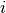
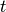
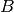
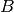
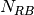

|
A Discrete-Event Network Simulator
|
Models |
|
|
A Discrete-Event Network Simulator
|
Models |
The overall architecture of the LENA simulation model is depicted in the figure Overall architecture of the LTE-EPC simulation model. There are two main components:
- the LTE Model. This model includes the LTE Radio Protocol stack (RRC, PDCP, RLC, MAC, PHY). These entities reside entirely within the UE and the eNB nodes.
Each component of the overall architecture is explained in detail in the following subsections.
Overall architecture of the LTE-EPC simulation model
The LTE model has been designed to support the evaluation of the following aspects of LTE systems:
- Radio Resource Management
- QoS-aware Packet Scheduling
- Inter-cell Interference Coordination
- Dynamic Spectrum Access
In order to model LTE systems to a level of detail that is sufficient to allow a correct evaluation of the above mentioned aspects, the following requirements have been considered:
- At the radio level, the granularity of the model should be at least that of the Resource Block (RB). In fact, this is the fundamental unit being used for resource allocation. Without this minimum level of granularity, it is not possible to model accurately packet scheduling and inter-cell-interference. The reason is that, since packet scheduling is done on a per-RB basis, an eNB might transmit on a subset only of all the available RBs, hence interfering with other eNBs only on those RBs where it is trasmitting. Note that this requirement rules out the adoption of a system level simulation approach, which evaluates resource allocation only at the granularity of call/bearer establishment.
- The simulator should scale up to tens of eNBs and hundreds of User Equipments (UEs). This rules out the use of a link level simulator, i.e., a simulator whose radio interface is modeled with a granularity up to the symbol level. This is because to have a symbol level model it is necessary to implement all the PHY layer signal processing, whose huge computational complexity severely limits simulation. In fact, link-level simulators are normally limited to a single eNB and one or a few UEs.
- It should be possible within the simulation to configure different cells so that they use different carrier frequencies and system bandwidths. The bandwidth used by different cells should be allowed to overlap, in order to support dynamic spectrum licensing solutions such as those described in [Ofcom2600MHz] and [RealWireless]. The calculation of interference should handle appropriately this case.
- To be more representative of the LTE standard, as well as to be as close as possible to real-world implementations, the simulator should support the MAC Scheduler API published by the FemtoForum [FFAPI]. This interface is expected to be used by femtocell manufacturers for the implementation of scheduling and Radio Resource Management (RRM) algorithms. By introducing support for this interface in the simulator, we make it possible for LTE equipment vendors and operators to test in a simulative environment exactly the same algorithms that would be deployed in a real system.
- The LTE simulation model should contain its own implementation of the API defined in [FFAPI]. Neither binary nor data structure compatibility with vendor-specific implementations of the same interface are expected; hence, a compatibility layer should be interposed whenever a vendor-specific MAC scheduler is to be used with the simulator. This requirement is necessary to allow the simulator to be independent from vendor-specific implementations of this interface specification. We note that [FFAPI] is a logical specification only, and its implementation (e.g., translation to some specific programming language) is left to the vendors.
- The model is to be used to simulate the transmission of IP packets by the upper layers. With this respect, it shall be considered that in LTE the Scheduling and Radio Resource Management do not work with IP packets directly, but rather with RLC PDUs, which are obtained by segmentation and concatenation of IP packets done by the RLC entities. Hence, these functionalities of the RLC layer should be modeled accurately.
For the sake of an easier explanation, we further divide the LTE model in two separate parts, which are described in the following.
The overall architecture of the LTE module is represented in the following figures.
The first part is the lower LTE radio protocol stack, which is represented in the figures Lower LTE radio protocol stack architecture for the eNB and Lower LTE radio protocol stack architecture for the UE, which deal respectively with the eNB and the UE.
Lower LTE radio protocol stack architecture for the eNB
Lower LTE radio protocol stack architecture for the UE
The LTE lower radio stack model includes in particular the PHY and the MAC layers; additionally, also the Scheduler is included (which is commonly associated with the MAC layer). The most important difference between the eNB and the UE is the presence of the Scheduler in the eNB, which is in charge of assigning radio resources to all UEs and Radio Bearers both in uplink and downlink. This component is not present within the UE.
The second part is the upper LTE radio stack, which is represented in the figure Architecture of the upper LTE radio stack.
Architecture of the upper LTE radio stack
This part includes the RRC, PDCP and RLC protocols. The architecture is very similar between the eNB and the UE: in fact, in both cases there is a single MAC instance and a single RRC instance, that work together with pairs of RLC and PDCP instances (one RLC and one PDCP instance per radio bearer).
We note that in the current version of the simulator the data plane of the upper LTE radio protocol stack is modeled accurately; in particular, the RLC and PDCP protocol are implemented with actual protocol headers that match those specified by the 3GPP standard. On the other hand, the functionality of the control plane (which for the upper LTE radio protocol stack involves mainly the RRC) is modeled in a significantly simplified fashion.
The EPC model provides means for the simulation of end-to-end IP connectivity over the LTE model. In particular, it supports for the interconnection of multiple UEs to the internet, via a radio access network of multiple eNBs connected to a single SGW/PGW node. This network topology is depicted in Figure Overall architecture of the LTE-EPC simulation model.
The following design choices have been made for the EPC model:
- The only Packet Data Network (PDN) type supported is IPv4.
- The SGW and PGW functional entities are implemented within a single node, which is hence referred to as the SGW/PGW node.
- The scenarios with inter-SGW mobility are not of interests. Hence, a single SGW/PGW node will be present in all simulations scenarios
- A requirement for the EPC model is that it can be used to simulate the end-to-end performance of realistic applications. Hence, it should be possible to use with the EPC model any regular ns-3 application working on top of TCP or UDP.
- Another requirement is the possibility of simulating network topologies with the presence of multiple eNBs, some of which might be equipped with a backhaul connection with limited capabilities. In order to simulate such scenarios, the user data plane protocols being used between the eNBs and the SGW/PGW should be modeled accurately.
- It should be possible for a single UE to use different applications with different QoS profiles. Hence, multiple EPS bearers should be supported for each UE. This includes the necessary classification of TCP/UDP traffic over IP done at the UE in the uplink and at the PGW in the downlink.
- The focus of the EPC model is mainly on the EPC data plane. The accurate modeling of the EPC control plane is, for the time being, not a requirement; hence, the necessary control plane interactions can be modeled in a simplified way by leveraging on direct interaction among the different simulation objects via the provided helper objects.
- The focus of the EPC model is on simulations of active users in ECM connected mode. Hence, all the functionality that is only relevant for ECM idle mode (in particular, tracking area update and paging) are not modeled at all.
- While handover support is not a current requirement, it is planned to be considered in the near future. Hence, the management of EPS bearers by the eNBs and the SGW/PGW should be implemented in such a way that it can be re-used when handover support is eventually added.
The focus of the EPC model is currently on the EPC data plane. To understand the architecture of this model, we first look at Figure LTE-EPC data plane protocol stack, where we represent the end-to-end LTE-EPC protocol stack as it is implemented in the simulator. From the figure, it is evident that the biggest simplification introduced in the EPC model for the data plane is the inclusion of the SGW and PGW functionality within a single SGW/PGW node, which removes the need for the S5 or S8 interfaces specified by 3GPP. On the other hand, for both the S1-U protocol stack and the LTE radio protocol stack all the protocol layers specified by 3GPP are present.
LTE-EPC data plane protocol stack
As shown in the figure, there are two different layers of IP networking. The first one is the end-to-end layer, which provides end-to-end connectivity to the users; this layers involves the UEs, the PGW and the remote host (including eventual internet routers and hosts in between), but does not involve the eNB. By default, UEs are assigned a public IPv4 address in the 7.0.0.0/8 network, and the PGW gets the address 7.0.0.1, which is used by all UEs as the gateway to reach the internet.
The second layer of IP networking is the EPC local area network. This involves all eNB nodes and the SGW/PGW node. This network is implemented as a set of point-to-point links which connect each eNB with the SGW/PGW node; thus, the SGW/PGW has a set of point-to-point devices, each providing connectivity to a different eNB. By default, a 10.x.y.z/30 subnet is assigned to each point-to-point link (a /30 subnet is the smallest subnet that allows for two distinct host addresses).
As specified by 3GPP, the end-to-end IP communications is tunneled over the local EPC IP network using GTP/UDP/IP. In the following, we explain how this tunneling is implemented in the EPC model. The explanation is done by discussing the end-to-end flow of data packets.

Data flow in the dowlink between the internet and the UE
To begin with, we consider the case of the downlink, which is depicted in Figure Data flow in the dowlink between the internet and the UE. Downlink Ipv4 packets are generated from a generic remote host, and addressed to one of the UE device. Internet routing will take care of forwarding the packet to the generic NetDevice of the SGW/PGW node which is connected to the internet (this is the Gi interface according to 3GPP terminology). The SGW/PGW has a VirtualNetDevice which is assigned the gateway IP address of the UE subnet; hence, static routing rules will cause the incoming packet from the internet to be routed through this VirtualNetDevice. Such device starts the GTP/UDP/IP tunneling procedure, by forwarding the packet to a dedicated application in the SGW/PGW node which is called EpcSgwPgwApplication. This application does the following operations:
- it determines the eNB node to which the UE is attached, by looking at the IP destination address (which is the address of the UE);
- it classifies the packet using Traffic Flow Templates (TFTs) to identify to which EPS Bearer it belongs. EPS bearers have a one-to-one mapping to S1-U Bearers, so this operation returns the GTP-U Tunnel Endpoint Identifier (TEID) to which the packet belongs;
- it adds the corresponding GTP-U protocol header to the packet;
- finally, it sends the packet over an UDP socket to the S1-U point-to-point NetDevice, addressed to the eNB to which the UE is attached.
As a consequence, the end-to-end IP packet with newly added IP, UDP and GTP headers is sent through one of the S1 links to the eNB, where it is received and delivered locally (as the destination address of the outmost IP header matches the eNB IP address). The local delivery process will forward the packet, via an UDP socket, to a dedicated application called EpcEnbApplication. This application then performs the following operations:
- it removes the GTP header and retrieves the TEID which is contained in it;
- leveraging on the one-to-one mapping between S1-U bearers and Radio Bearers (which is a 3GPP requirement), it determines the Radio Bearer ID (RBID) to which the packet belongs;
- it records the RBID in a dedicated tag called LteRadioBearerTag, which is added to the packet;
- it forwards the packet to the LteEnbNetDevice of the eNB node via a raw packet socket
Note that, at this point, the outmost header of the packet is the end-to-end IP header, since the IP/UDP/GTP headers of the S1 protocol stack have already been stripped. Upon reception of the packet from the EpcEnbApplication, the LteEnbNetDevice will retrieve the RBID from the LteRadioBearerTag, and based on the RBID will determine the Radio Bearer instance (and the corresponding PDCP and RLC protocol instances) which are then used to forward the packet to the UE over the LTE radio interface. Finally, the LteUeNetDevice of the UE will receive the packet, and delivery it locally to the IP protocol stack, which will in turn delivery it to the application of the UE, which is the end point of the downlink communication.
Data flow in the uplink between the UE and the internet
The case of the uplink is depicted in Figure Data flow in the uplink between the UE and the internet. Uplink IP packets are generated by a generic application inside the UE, and forwarded by the local TCP/IP stack to the LteUeNetDevice of the UE. The LteUeNetDevice then performs the following operations:
- it classifies the packet using TFTs and determines the Radio Bearer to which the packet belongs (and the corresponding RBID);
- it identifies the corresponding PDCP protocol instance, which is the entry point of the LTE Radio Protocol stack for this packet;
- it sends the packet to the eNB over the LTE Radio Protocol stack.
The eNB receives the packet via its LteEnbNetDevice. Since there is a single PDCP and RLC protocol instance for each Radio Bearer, the LteEnbNetDevice is able to determine the RBID of the packet. This RBID is then recorded onto an LteRadioBearerTag, which is added to the packet. The LteEnbNetDevice then forwards the packet to the EpcEnbApplication via a raw packet socket.
Upon receiving the packet, the EpcEnbApplication performs the following operations:
- it retrieves the RBID from the LteRadioBearerTag in the packet;
- it determines the corresponding EPS Bearer instance and GTP-U TEID by leveraging on the one-to-one mapping between S1-U bearers and Radio Bearers;
- it adds a GTP-U header on the packet, including the TEID determined previously;
- it sends the packet to the SGW/PGW node via the UDP socket connected to the S1-U point-to-point net device.
At this point, the packet contains the S1-U IP, UDP and GTP headers in addition to the original end-to-end IP header. When the packet is received by the corresponding S1-U point-to-point NetDevice of the SGW/PGW node, it is delivered locally (as the destination address of the outmost IP header matches the address of the point-to-point net device). The local delivery process will forward the packet to the EpcSgwPgwApplication via the correponding UDP socket. The EpcSgwPgwApplication then removes the GTP header and forwards the packet to the VirtualNetDevice. At this point, the outmost header of the packet is the end-to-end IP header. Hence, if the destination address within this header is a remote host on the internet, the packet is sent to the internet via the corresponding NetDevice of the SGW/PGW. In the event that the packet is addressed to another UE, the IP stack of the SGW/PGW will redirect the packet again to the VirtualNetDevice, and the packet will go through the dowlink delivery process in order to reach its destination UE.
This section describes the ns-3 specific version of the LTE MAC Scheduler Interface Specification published by the FemtoForum [FFAPI].
We implemented the ns-3 specific version of the FemtoForum MAC Scheduler Interface [FFAPI] as a set of C++ abstract classes; in particular, each primitive is translated to a C++ method of a given class. The term implemented here is used with the same meaning adopted in [FFAPI], and hence refers to the process of translating the logical interface specification to a particular programming language. The primitives in [FFAPI] are grouped in two groups: the CSCHED primitives, which deal with scheduler configuration, and the SCHED primitives, which deal with the execution of the scheduler. Furthermore, [FFAPI] defines primitives of two different kinds: those of type REQ go from the MAC to the Scheduler, and those of type IND/CNF go from the scheduler to the MAC. To translate these characteristics into C++, we define the following abstract classes that implement Service Access Points (SAPs) to be used to issue the primitives:
- the FfMacSchedSapProvider class defines all the C++ methods that correspond to SCHED primitives of type REQ;
- the FfMacSchedSapUser class defines all the C++ methods that correspond to SCHED primitives of type CNF/IND;
- the FfMacCschedSapProvider class defines all the C++ methods that correspond to CSCHED primitives of type REQ;
- the FfMacCschedSapUser class defines all the C++ methods that correspond to CSCHED primitives of type CNF/IND;
There are 3 blocks involved in the MAC Scheduler interface: Control block, Subframe block and Scheduler block. Each of these blocks provide one part of the MAC Scheduler interface. The figure below shows the relationship between the blocks and the SAPs defined in our implementation of the MAC Scheduler Interface.
In addition to the above principles, the following design choices have been taken:
- The definition of the MAC Scheduler interface classes follows the naming conventions of the ns-3 Coding Style. In particular, we follow the CamelCase convention for the primitive names. For example, the primitive CSCHED_CELL_CONFIG_REQ is translated to CschedCellConfigReq in the ns-3 code.
- The same naming conventions are followed for the primitive parameters. As the primitive parameters are member variables of classes, they are also prefixed with a m_.
- regarding the use of vectors and lists in data structures, we note that [FFAPI] is a pretty much C-oriented API. However, considered that C++ is used in ns-3, and that the use of C arrays is discouraged, we used STL vectors (std::vector) for the implementation of the MAC Scheduler Interface, instead of using C arrays as implicitly suggested by the way [FFAPI] is written.
- In C++, members with constructors and destructors are not allow in unions. Hence all those data structures that are said to be unions in [FFAPI] have been defined as structs in our code.
The figure below shows how the MAC Scheduler Interface is used within the eNB.
The User side of both the CSCHED SAP and the SCHED SAP are implemented within the eNB MAC, i.e., in the file lte-enb-mac.cc. The eNB MAC can be used with different scheduler implementations without modifications. The same figure also shows, as an example, how the Round Robin Scheduler is implemented: to interact with the MAC of the eNB, the Round Robin scheduler implements the Provider side of the SCHED SAP and CSCHED SAP interfaces. A similar approach can be used to implement other schedulers as well. A description of all the scheduler implementations that we provide as part of our LTE simulation module will be given in the following.
We now briefly describe how resource allocation is handled in LTE, clarifying how it is implemented in the simulator. The scheduler is in charge of generating specific structures calles Data Control Indication (DCI) which are then transmitted by the PHY of the eNB to the connected UEs, in order to inform them of the resource allocation on a per subframe basis. In doing this in the downlink direction, the scheduler has to fill some specific fields of the DCI structure with all the information, such as: the Modulation and Coding Scheme (MCS) to be used, the MAC Transport Block (TB) size, and the allocation bitmap which identifies which RBs will contain the data transmitted by the eNB to each user.
For the mapping of resources to physical RBs, we adopt a localized mapping approach (see [Sesia2009], Section 9.2.2.1); hence in a given subframe each RB is always allocated to the same user in both slots. The allocation bitmap can be coded in different formats; in this implementation, we considered the Allocation Type 0 defined in [TS36213], according to which the RBs are grouped in Resource Block Groups (RBG) of different size determined as a function of the Transmission Bandwidth Configuration in use.
For certain bandwidth values not all the RBs are usable, since the group size is not a common divisor of the group. This is for instance the case when the bandwith is equal to 25 RBs, which results in a RBG size of 2 RBs, and therefore 1 RB will result not addressable. In uplink the format of the DCIs is different, since only adjacent RBs can be used because of the SC-FDMA modulation. As a consequence, all RBs can be allocated by the eNB regardless of the bandwidth configuration.
The simulator provides two Adaptive Modulation and Coding (AMC) models: one based on the GSoC model [Piro2011] and one based on the physical error model (described in the following sections).
The former model is a modified version of the model described in [Piro2011], which in turn is inspired from [Seo2004]. Our version is described in the following. Let  denote the generic user, and let be its SINR. We get the spectral efficiency of user using the following equations:
The procedure described in [R1-081483] is used to get the corresponding MCS scheme. The spectral efficiency is quantized based on the channel quality indicator (CQI), rounding to the lowest value, and is mapped to the corresponding MCS scheme.
Finally, we note that there are some discrepancies between the MCS index in [R1-081483] and that indicated by the standard: [TS36213] Table 7.1.7.1-1 says that the MCS index goes from 0 to 31, and 0 appears to be a valid MCS scheme (TB size is not 0) but in [R1-081483] the first useful MCS index is 1. Hence to get the value as intended by the standard we need to subtract 1 from the index reported in [R1-081483].
The alternative model is based on the physical error model developed for this simulator and explained in the following subsections. This scheme is able to adapt the MCS selection to the actual PHY layer performance according to the specific CQI report. According to their definition, a CQI index is assigned when a single PDSCH TB with the modulation coding scheme and code rate correspondent to that CQI index in table 7.2.3-1 of [TS36213] can be received with an error probability less than 0.1. In case of wideband CQIs, the reference TB includes all the RBGs available in order to have a reference based on the whole available resources; while, for subband CQIs, the reference TB is sized as the RBGs.
The Round Robin (RR) scheduler is probably the simplest scheduler found in the literature. It works by dividing the available resources among the active flows, i.e., those logical channels which have a non-empty RLC queue. If the number of RBGs is greater than the number of active flows, all the flows can be allocated in the same subframe. Otherwise, if the number of active flows is greater than the number of RBGs, not all the flows can be scheduled in a given subframe; then, in the next subframe the allocation will start from the last flow that was not allocated. The MCS to be adopted for each user is done according to the received wideband CQIs.
The Proportional Fair (PF) scheduler [Sesia2009] works by scheduling a user
when its
instantaneous channel quality is high relative to its own average channel
condition over time. Let denote generic users; let  be the
subframe index, and  be the resource block index; let be MCS
usable by user on resource block according to what reported by the AMC
model (see Adaptive Modulation and Coding); finally, let be the TB
size in bits as defined in [TS36213] for the case where a number  of
resource blocks is used. The achievable rate in bit/s for user
on resource block group at subframe is defined as
be the resource block index; let be MCS
usable by user on resource block according to what reported by the AMC
model (see Adaptive Modulation and Coding); finally, let be the TB
size in bits as defined in [TS36213] for the case where a number  of
resource blocks is used. The achievable rate in bit/s for user
on resource block group at subframe is defined as
where is the TTI duration.
At the start of each subframe , each RBG is assigned to a certain user.
In detail, the index to which RBG is assigned at time
is determined as
where is the past througput performance perceived by the
user  .
According to the above scheduling algorithm, a user can be allocated to
different RBGs, which can be either adjacent or not, depending on the current
condition of the channel and the past throughput performance . The
latter is determined at the end of the subframe using the following
exponential moving average approach:
.
According to the above scheduling algorithm, a user can be allocated to
different RBGs, which can be either adjacent or not, depending on the current
condition of the channel and the past throughput performance . The
latter is determined at the end of the subframe using the following
exponential moving average approach:
where  is the time constant (in number of subframes) of
the exponential moving average, and is the actual
throughput achieved by the user in the subframe .
is measured according to the following procedure. First we
determine the MCS actually used by user
:
is the time constant (in number of subframes) of
the exponential moving average, and is the actual
throughput achieved by the user in the subframe .
is measured according to the following procedure. First we
determine the MCS actually used by user
:
then we determine the total number of RBGs allocated to user
:
where indicates the cardinality of the set; finally,
The implementation of the MAC Transport Blocks (TBs) is simplified with respect to the 3GPP specifications. In particular, a simulator-specific class (PacketBurst) is used to aggregate MAC SDUs in order to achieve the simulator’s equivalent of a TB, without the corresponding implementation complexity. The multiplexing of different logical channels to and from the RLC layer is performed using a dedicated packet tag (LteRadioBearerTag), which performs a functionality which is partially equivalent to that of the MAC headers specified by 3GPP.
The RLC entity is specified in the 3GPP technical specification [TS36322], and comprises three different types of RLC: Transparent Mode (TM), Unacknowledge Mode (UM) and Acknowledged Mode (AM). We implement only the UM and the AM RLC entities.
The RLC entities provide the RLC service interface to the upper PDCP layer and the MAC service interface to the lower MAC layer. The RLC entities use the PDCP service interface from the upper PDCP layer and the MAC service interface from the lower MAC layer.
Figure Implementation Model of PDCP, RLC and MAC entities and SAPs shows the implementation model of the RLC entities and its relationship with all the other entities and services in the protocol stack.
Implementation Model of PDCP, RLC and MAC entities and SAPs
The PDCP service interface is divided into two parts:
- the PdcpSapProvider part is provided by the PDCP layer and used by the upper layer and
- the PdcpSapUser part is provided by the upper layer and used by the PDCP layer.
The following list specifies which service primitives are provided by the PDCP service interfaces:
PdcpSapProvider::TransmitRrcPdu
- The RRC entity uses this primitive to send an RRC PDU to the lower PDCP entity in the transmitter peer
PdcpSapUser::ReceiveRrcPdu
- The PDCP entity uses this primitive to send an RRC PDU to the upper RRC entity in the receiver peer
The RLC service interface is divided into two parts:
- the RlcSapProvider part is provided by the RLC layer and used by the upper PDCP layer and
- the RlcSapUser part is provided by the upper PDCP layer and used by the RLC layer.
Both the UM and the AM RLC entities provide the same RLC service interface to the upper PDCP layer.
The following list specifies which service primitives are provided by the RLC service interfaces:
RlcSapProvider::TransmitPdcpPdu
- The PDCP entity uses this primitive to send a PDCP PDU to the lower RLC entity in the transmitter peer
RlcSapUser::ReceivePdcpPdu
- The RLC entity uses this primitive to send a PDCP PDU to the upper PDCP entity in the receiver peer
The MAC service interface is divided into two parts:
- the MacSapProvider part is provided by the MAC layer and used by the upper RLC layer and
- the MacSapUser part is provided by the upper RLC layer and used by the MAC layer.
The following list specifies which service primitives are provided by the MAC service interfaces:
MacSapProvider::TransmitPdu
- The RLC entity uses this primitive to send a RLC PDU to the lower MAC entity in the transmitter peer
MacSapProvider::ReportBufferStatus
- The RLC entity uses this primitive to report the MAC entity the size of pending buffers in the transmitter peer
MacSapUser::NotifyTxOpportunity
- The MAC entity uses this primitive to nofify the RLC entity a transmission opportunity
MacSapUser::ReceivePdu
- The MAC entity uses this primitive to send an RLC PDU to the upper RLC entity in the receiver peer
The following sequence diagram shows the interactions between the different entities (RRC, PDCP, AM RLC, MAC and MAC scheduler) of the eNB in the downlink to perform data communications.
Figure Sequence diagram of data PDU transmission in downlink shows how the upper layers send data PDUs and how the data flow is processed by the different entities/services of the LTE protocol stack. We will explain in detail only the processing related to the AM RLC entity, which is the most complex.
Sequence diagram of data PDU transmission in downlink
The PDCP entity calls the Transmit_PDCP_PDU service primitive in order to send a data PDU. The AM RLC entity processes this service primitive according to the AM data transfer procedures defined in section 5.1.3 of [TS36322].
When the Transmit_PDCP_PDU service primitive is called, the AM RLC entity performs the following operations:
- Put the data SDU in the Transmission Buffer.
- Compute the size of the buffers (how the size of buffers is computed will be explained afterwards).
- Call the Report_Buffer_Status service primitive of the eNB MAC entity in order to notify to the eNB MAC entity the sizes of the buffers of the AM RLC entity. Then, the eNB MAC entity updates the buffer status in the MAC scheduler using the SchedDlRlcBufferReq service primitive of the FF MAC Scheduler API.
Afterwards, when the MAC scheduler decides that some data can be sent, the MAC entity notifies it to the RLC entity, i.e. it calls the Notify_Tx_Opportunity service primitive, then the AM RLC entity does the following:
- Create a single data PDU by segmenting and/or concatenating the SDUs in the Transmission Buffer.
- Move the data PDU from the Transmission Buffer to the Transmitted PDUs Buffer.
- Update state variables according section 5.1.3.1.1 of [TS36322].
- Call the Transmit_PDU primitive in order to send the data PDU to the MAC entity.
The sequence diagram of Figure Sequence diagram of data PDU retransmission in downlink shows the interactions between the different entities (AM RLC, MAC and MAC scheduler) of the eNB in downlink when data PDUs must be retransmitted by the AM RLC entity.
Sequence diagram of data PDU retransmission in downlink
The transmitting AM RLC entity can receive STATUS PDUs from the peer AM RLC entity. STATUS PDUs are sent according section 5.3.2 of [TS36322] and the processing of reception is made according section 5.2.1 of [TS36322].
When a data PDUs is retransmitted from the Transmitted PDUs Buffer, it is also moved to the Retransmission Buffer.
The sequence diagram of Figure Sequence diagram of data PDU transmission in uplink shows the interactions between the different entities of the UE (RRC, PDCP, RLC and MAC) and the eNB (MAC and Scheduler) in uplink when data PDUs are sent by the upper layers.
Sequence diagram of data PDU transmission in uplink
It is similar to the sequence diagram in downlink; the main difference is that in this case the Report_Buffer_Status is sent from the UE MAC to the MAC Scheduler in the eNB over the air using the control channel.
The sequence diagram of Figure Sequence diagram of data PDU retransmission in uplink shows the interactions between the different entities of the UE (AM RLC and MAC) and the eNB (MAC) in uplink when data PDUs must be retransmitted by the AM RLC entity.
Sequence diagram of data PDU retransmission in uplink
The processing of the data transfer in the AM RLC entity is explained in section 5.1.3 of [TS36322]. In this section we describe some details of the implementation of the RLC entity.
The AM RLC entity manages 3 buffers:
- Transmission Buffer: it is the RLC SDU queue. When the AM RLC entity receives a SDU in the TransmitPdcpPdu service primitive from the upper PDCP entity, it enqueues it in the Transmission Buffer. We put a limit on the RLC buffer size and just silently drop SDUs when the buffer is full.
- Transmitted PDUs Buffer: it is the queue of transmitted RLC PDUs for which an ACK/NACK has not been received yet. When the AM RLC entity sends a PDU to the MAC entity, it also puts a copy of the transmitted PDU in the Transmitted PDUs Buffer.
- Retransmission Buffer: it is the queue of RLC PDUs which are considered for retransmission (i.e., they have been NACKed). The AM RLC entity moves this PDU to the Retransmission Buffer, when it retransmits a PDU from the Transmitted Buffer.
The Transmission Buffer contains RLC SDUs. A RLC PDU is one or more SDU segments plus an RLC header. The size of the RLC header of one RLC PDU depends on the number of SDU segments the PDU contains.
The 3GPP standard (section 6.1.3.1 of [TS36321]) says clearly that, for the uplink, the RLC and MAC headers are not considered in the buffer size that is to be report as part of the Buffer Status Report. For the downlink, the behavior is not specified. Neither [FFAPI] specifies how to do it. Our RLC model works by assuming that the calculation of the buffer size in the downlink is done exactly as in the uplink, i.e., not considering the RLC and MAC header size.
We note that this choice affects the interoperation with the MAC scheduler, since, in response to the Notify_Tx_Opportunity service primitive, the RLC is expected to create a PDU of no more than the size requested by the MAC, including RLC overhead. Hence, unneeded fragmentation can occur if (for example) the MAC notifies a transmission exactly equal to the buffer size previously reported by the RLC. We assume that it is left to the Scheduler to implement smart strategies for the selection of the size of the transmission opportunity, in order to eventually avoid the inefficiency of unneeded fragmentation.
The AM RLC entity generates and sends exactly one RLC PDU for each transmission opportunity even if it is smaller than the size reported by the transmission opportunity. So for instance, if a STATUS PDU is to be sent, then only this PDU will be sent in that transmission opportunity.
The segmentation and concatenation for the SDU queue of the AM RLC entity follows the same philosophy as the same procedures of the UM RLC entity but there are new state variables (see section 7.1) only present in the AM RLC entity.
It is noted that, according to the 3GPP specs, there is no concatenation for the Retransmission Buffer.
The current model of the AM RLC entity does not support the re-segmentation of the retransmission buffer. Rather, the AM RLC entity just expects to receive a big enough transmission opportunity. An assertion fails if a too small transmission opportunity is received.
We do not support the following procedures of [TS36322] :
- “Send an indication of successful delivery of RLC SDU” (See section 5.1.3.1.1)
- “Indicate to upper layers that max retransmission has been reached” (See section 5.2.1)
- “SDU discard procedures” (See section 5.3)
- “Re-establishment procedure” (See section 5.4)
We do not support any of the additional primitives of RLC SAP for AM RLC entity. In particular:
- no SDU discard notified by PDCP
- no notification of successful / failed delivery by AM RLC entity to PDCP entity
In addition to the full-fledged RLC/UM and RLC/AM implementations, a simplified RLC model is provided, which is denoted RLC/SM. This RLC model does not accepts PDUs from any above layer (such as PDCP); rather, RLC/SM takes care of the generation of RLC PDUs in response to the notification of transmission opportunities notified by the MAC. In other words, RLC/SM simulates saturation conditions, i.e., it assumes that the RLC buffer is always full and can generate a new PDU whenever notified by the scheduler. In fact, the “SM” in the name of the model stands for “Saturation Mode”.
RLC/SM is used for simplified simulation scenarios in which only the LTE Radio model is used, without the EPC and hence without any IP networking support. We note that, although RLC/SM is an unrealistic traffic model, it still allows for the correct simulation of scenarios with multiple flows belonging to different (non real-time) QoS classes, in order to test the QoS performance obtained by different schedulers. This can be done since it is the task of the Scheduler to assign transmission resources based on the characteristics of each Radio Bearer which are specified upon the creation of each Bearer at the start of the simulation.
As for schedulers designed to work with real-time QoS traffic that has delay constraints, RLC/SM is probably not an appropriate choice. This is because the absence of actual RLC SDUs (replaced by the artificial generation of Buffer Status Reports) makes it not possible to provide the Scheduler with meaningful head-of-line-delay information, which is normally the metric of choice for the implementation of scheduling policies for real-time traffic flows. For the simulation and testing of such schedulers, it is advisable to use one of the realistic RLC implementations (RLC/UM or RLC/AM).
The reference document for the specification of the PDCP entity is [TS36323]. With respect to this specification, the PDCP model implemented in the simulator supports only the following features:
- transfer of data (user plane or control plane);
- maintenance of PDCP SNs;
The following features are currently not supported:
- header compression and decompression of IP data flows using the ROHC protocol;
- in-sequence delivery of upper layer PDUs at re-establishment of lower layers;
- duplicate elimination of lower layer SDUs at re-establishment of lower layers for radio bearers mapped on RLC AM;
- ciphering and deciphering of user plane data and control plane data;
- integrity protection and integrity verification of control plane data;
- timer based discard;
- duplicate discarding.
At the time of this writing, the RRC model implemented in the simulator is not comprehensive of all the funcionalities defined by the 3GPP standard. In particular, RRC messaging over signaling radio bearer is not implemented; the corresponding control functionality is performed via direct function calls among the relevant eNB and UE protocol entities and the helper objects.
The RRC implements the procedures for managing the connection of the UEs to the eNBs, and to setup and release the Radio Bearers. The RRC entity also takes care of multiplexing data packets coming from the upper layers into the appropriate radio bearer. In the UE, this is performed in the uplink by using the Traffic Flow Template classifier (TftClassifier). In the eNB, this is done for downlink traffic, by leveraging on the one-to-one mapping between S1-U bearers and Radio Bearers, which is required by the 3GPP specifications.
The physical layer model provided in this LTE simulator is based on the one described in [Piro2011], with the following modifications. The model now includes the inter cell intereference calculation and the simulation of uplink traffic, including both packet transmission and CQI generation.
To model the latency of real MAC and PHY implementations, the PHY model simulates a MAC-to-channel delay in multiples of TTIs (1ms). The transmission of both data and control packets are delayed by this amount.
The generation of CQI feedback is done accordingly to what specified in [FFAPI]. In detail, we considered the generation of periodic wideband CQI (i.e., a single value of channel state that is deemed representative of all RBs in use) and inband CQIs (i.e., a set of value representing the channel state for each RB).
The CQI feedbacks are currently evaluated according to the SINR perceived by data transmissions (i.e., PDSHC for downlink and PUSCH for uplink) instead of the one based on reference signals (i.e., RS for downlink and SRS for uplink) since that signals are not implemented in the current version of the PHY layer. This implies that a UE has to transmit some data in order to have CQI feedbacks. This assumption is based on the fact that the reference signals defined in LTE are usually multiplexed within the data transmissions resources.
The PHY model is based on the well-known Gaussian interference models, according to which the powers of interfering signals (in linear units) are summed up together to determine the overall interference power.
The sequence diagram of Figure Sequence diagram of the PHY interference calculation procedure shows how interfering signals are processed to calculate the SINR, and how SINR is then used for the generation of CQI feedback.
Sequence diagram of the PHY interference calculation procedure
The usage of the radio spectrum by eNBs and UEs in LTE is described in
[TS36101]. In the simulator, radio spectrum usage is modeled as follows.
Let denote the LTE Absolute Radio Frequency Channel Number, which
identifies the carrier frequency on a 100 kHz raster; furthermore, let be
the Transmission Bandwidth Configuration in number of Resource Blocks. For every
pair  used in the simulation we define a corresponding spectrum
model using the Spectrum framework described
in [Baldo2009]. and can be configured for every eNB instantiated
in the simulation; hence, each eNB can use a different spectrum model. Every UE
will automatically use the spectrum model of the eNB it is attached to. Using
the MultiModelSpectrumChannel described in [Baldo2009], the interference
among eNBs that use different spectrum models is properly accounted for.
This allows to simulate dynamic spectrum access policies, such as for
example the spectrum licensing policies that are
discussed in [Ofcom2600MHz].
used in the simulation we define a corresponding spectrum
model using the Spectrum framework described
in [Baldo2009]. and can be configured for every eNB instantiated
in the simulation; hence, each eNB can use a different spectrum model. Every UE
will automatically use the spectrum model of the eNB it is attached to. Using
the MultiModelSpectrumChannel described in [Baldo2009], the interference
among eNBs that use different spectrum models is properly accounted for.
This allows to simulate dynamic spectrum access policies, such as for
example the spectrum licensing policies that are
discussed in [Ofcom2600MHz].
The simulator includes an error model of the data plane (i.e., PDSCH) according to the standard link-to-system mapping (LSM) techniques. The choice is aligned with the standard system simulation methodology of OFDMA radio transmission technology. Thanks to LSM we are able to maintain a good level of accuracy and at the same time limiting the computational complexity increase. It is based on the mapping of single link layer performance obtained by means of link level simulators to system (in our case network) simulators. In particular link the layer simulator is used for generating the performance of a single link from a PHY layer perspective, usually in terms of code block error rate (BLER), under specific static conditions. LSM allows the usage of these parameters in more complex scenarios, typical of system/network simulators, where we have more links, interference and “colored” channel propagation phenomena (e.g., frequency selective fading).
To do this the Vienna LTE Simulator [ViennaLteSim] has been used for what concerns the extraction of link layer performance and the Mutual Information Based Effective SINR (MIESM) as LSM mapping function using part of the work recently published by the Signet Group of University of Padua [PaduaPEM].
The specific LSM method adopted is the one based on the usage of a mutual information metric, commonly referred to as the mutual information per per coded bit (MIB or MMIB when a mean of multiples MIBs is involved). Another option would be represented by the Exponential ESM (EESM); however, recent studies demonstrate that MIESM outperforms EESM in terms of accuracy [LozanoCost]. Moreover, from an HARQ perspective, the MIESM has more flexibility in managing the combinations of the HARQ blocks. In fact, by working in the MI field, the formulas for evaluating both the chase combining (CC) and the incremental redundancy (IR) schemes work in the MI field as well, where there is no dependency respect to the MCS. On the contrary, the HARQ model of EESM works in the effective SINR field, which is MCS dependent, and does not allow the combination of HARQ blocks using different MCSs [wimaxEmd].
MIESM computational procedure diagram
The mutual information (MI) is dependent on the constellation mapping and can be calculated per transport block (TB) basis, by evaluating the MI over the symbols and the subcarrier. However, this would be too complex for a network simulator. Hence, in our implementation a flat channel response within the RB has been considered; therefore the overall MI of a TB is calculated averaging the MI evaluated per each RB used in the TB. In detail, the implemented scheme is depicted in Figure MIESM computational procedure diagram, where we see that the model starts by evaluating the MI value for each RB, represented in the figure by the SINR samples. Then the equivalent MI is evaluated per TB basis by averaging the MI values. Finally, a further step has to be done since the link level simulator returns the performance of the link in terms of block error rate (BLER) in a addive white guassian noise (AWGN) channel, where the blocks are the code blocks (CBs) independently encoded/decoded by the turbo encoder. On this matter the standard 3GPP segmentation scheme has been used for estimating the actual CB size (described in section 5.1.2 of [TS36212]). This scheme divides the the TB in blocks of size and blocks of size . Therefore the overall TB BLER (TBLER) can be expressed as
where the  is the BLER of the CB obtained according to the link level simulator CB BLER curves.
For estimating the , the MI evaluation has been implemented according to its numerical approximation defined in [wimaxEmd]. Moreover, for reducing the complexity of the computation, the approximation has been converted into lookup tables. In detail, Gaussian cumulative model has been used for approximating the AWGN BLER curves with three parameters which provides a close fit to the standard AWGN performances, in formula:
is the BLER of the CB obtained according to the link level simulator CB BLER curves.
For estimating the , the MI evaluation has been implemented according to its numerical approximation defined in [wimaxEmd]. Moreover, for reducing the complexity of the computation, the approximation has been converted into lookup tables. In detail, Gaussian cumulative model has been used for approximating the AWGN BLER curves with three parameters which provides a close fit to the standard AWGN performances, in formula:
where  is the MI of the TB, represents the “transition center” and is related to the “transition width” of the Gaussian cumulative distribution for each Effective Code Rate (ECR) which is the actual transmission rate according to the channel coding and MCS. For limiting the computational complexity of the model we considered only a subset of the possible ECRs in fact we would have potentially 5076 possible ECRs (i.e., 27 MCSs and 188 CB sizes). On this respect, we will limit the CB sizes to some representative values (i.e., 40, 140, 160, 256, 512, 1024, 2048, 4032, 6144), while for the others the worst one approximating the real one will be used (i.e., the smaller CB size value available respect to the real one). This choice is aligned to the typical performance of turbo codes, where the CB size is not strongly impacting on the BLER. However, it is to be notes that for CB sizes lower than 1000 bits the effect might be relevant (i.e., till 2 dB); therefore, we adopt this unbalanced sampling interval for having more precision where it is necessary. This behaviour is confirmed by the figures presented in the Annes Section.
is the MI of the TB, represents the “transition center” and is related to the “transition width” of the Gaussian cumulative distribution for each Effective Code Rate (ECR) which is the actual transmission rate according to the channel coding and MCS. For limiting the computational complexity of the model we considered only a subset of the possible ECRs in fact we would have potentially 5076 possible ECRs (i.e., 27 MCSs and 188 CB sizes). On this respect, we will limit the CB sizes to some representative values (i.e., 40, 140, 160, 256, 512, 1024, 2048, 4032, 6144), while for the others the worst one approximating the real one will be used (i.e., the smaller CB size value available respect to the real one). This choice is aligned to the typical performance of turbo codes, where the CB size is not strongly impacting on the BLER. However, it is to be notes that for CB sizes lower than 1000 bits the effect might be relevant (i.e., till 2 dB); therefore, we adopt this unbalanced sampling interval for having more precision where it is necessary. This behaviour is confirmed by the figures presented in the Annes Section.
On this respect, we reused part of the curves obtained within [PaduaPEM]. In detail, we introduced the CB size dependency to the CB BLER curves with the support of the developers of [PaduaPEM] and of the LTE Vienna Simulator. In fact, the module released provides the link layer performance only for what concerns the MCSs (i.e, with a given fixed ECR). In detail the new error rate curves for each has been evaluated with a simulation campaign with the link layer simulator for a single link with AWGN noise and for CB size of 104, 140, 256, 512, 1024, 2048, 4032 and 6144. These curves has been mapped with the Gaussian cumulative model formula presented above for obtaining the correspondents and parameters.
The BLER perfomance of all MCS obtained with the link level simulator are plotted in the following figures (blue lines) together with their correspondent mapping to the Gaussian cumulative distribution (red dashed lines).
BLER for MCS 1, 2, 3 and 4.
BLER for MCS 5, 6, 7 and 8.
BLER for MCS 9, 10, 11 and 12.
BLER for MCS 13, 14, 15 and 16.
BLER for MCS 17, 17, 19 and 20.
BLER for MCS 21, 22, 23 and 24.
BLER for MCS 25, 26, 27 and 28.
BLER for MCS 29.
The model implemented uses the curves for the LSM of the recently LTE PHY Error Model released in the ns3 community by the Signet Group [PaduaPEM] and the new ones generated for different CB sizes. The LteSpectrumPhy class is in charge of evaluating the TB BLER thanks to the methods provided by the LteMiErrorModel class, which is in charge of evaluating the TB BLER according to the vector of the perceived SINR per RB, the MCS and the size in order to proper model the segmentation of the TB in CBs. In order to obtain the vector of the perceived SINR two instances of LtePemSinrChunkProcessor (child of LteSinrChunkProcessor dedicated to evaluate the SINR for obtaining physical error performance) have been attached to UE downlink and eNB uplink LteSpectrumPhy modules for evaluating the error model distribution respectively of PDSCH (UE side) and ULSCH (eNB side).
The model can be disabled for working with a zero-losses channel by setting the PemEnabled attribute of the LteSpectrumPhy class (by default is active). This can be done according to the standard ns3 attribute system procedure, that is:
Config::SetDefault ("ns3::LteSpectrumPhy::PemEnabled", BooleanValue (false));
The use of multiple antennas both at transmitter and receiver side, known as multiple-input and multiple-output (MIMO), is a problem well studied in literature during the past years. Most of the work concentrate on evaluating analytically the gain that the different MIMO schemes might have in term of capacity; however someones provide also information of the gain in terms of received power _[CatreuxMIMO].
According to the considerations above, a model more flexible can be obtained considering the gain that MIMO schemes bring in the system from a statistical point of view. As highlighted before, _[CatreuxMIMO] presents the statistical gain of several MIMO solutions respect to the SISO one in case of no correlation between the antennas. In the work the gain is presented as the cumulative distribution function (CDF) of the output SINR for what concern SISO, MIMO-Alamouti, MIMO-MMSE, MIMO-OSIC-MMSE and MIMO-ZF schemes. Elaborating the results, the output SINR distribution can be approximated with a log-normal one with different mean and variance as function of the scheme considered. However, the variances are not so different and they are approximatively equal to the one of the SISO mode already included in the shadowing component of the BuildingsPropagationLossModel, in detail:
- SISO: and [dB].
- MIMO-Alamouti: and
[dB].
- MIMO-MMSE: and [dB].
- MIMO-OSIC-MMSE: and [dB].
- MIMO-ZF:
and [dB].
Therefore the PHY layer implements the MIMO model as the gain perceived by the receiver when using a MIMO scheme respect to the one obtained using SISO one. We note that, these gains referred to a case where there is no correlation between the antennas in MIMO scheme; therefore do not model degradation due to paths correlation.
The LTE module works with the channel objects provided by the Spectrum module, i.e., either SingleModelSpectrumChannel or MultiModelSpectrumChannel. Because of these, all the propagation models supported by these objecs can be used within the LTE module.
The recommended propagation model to be used with the LTE module is the one provided by the Buildings module, which was in fact designed specifically with LTE (though it can be used with other wireless technologies as well). Please refer to the documentation of the Buildings module for generic information on the propagation model it provides.
In this section we will highlight some considerations that specifically apply when the Buildings module is used together with the LTE module.
The naming convention used in the following will be:
- User equipment: UE
- Macro Base Station: MBS
- Small cell Base Station (e.g., pico/femtocell): SC
The LTE module considers FDD only, and implements downlink and uplink propagation separately. As a consequence, the following pathloss computations are performed
- MBS <-> UE (indoor and outdoor)
- SC (indoor and outdoor) <-> UE (indoor and outdoor)
The LTE model does not provide the following pathloss computations:
- UE <-> UE
- MBS <-> MBS
- MBS <-> SC
- SC <-> SC
The Buildings model does not know the actual type of the node; i.e., it is not aware of whether a transmitter node is a UE, a MBS, or a SC. Rather, the Buildings model only cares about the position of the node: whether it is indoor and outdoor, and what is its z-axis respect to the rooftop level. As a consequence, for an eNB node that is placed outdoor and at a z-coordinate above the rooftop level, the propagation models typical of MBS will be used by the Buildings module. Conversely, for an eNB that is placed outdoor but below the rooftop, or indoor, the propagation models typical of pico and femtocells will be used.
For communications involving at least one indoor node, the corresponding wall penetration losses will be calculated by the Buildings model. This covers the following use cases:
- MBS <-> indoor UE
- outdoor SC <-> indoor UE
- indoor SC <-> indoor UE
- indoor SC <-> outdoor UE
Please refer to the documentation of the Buildings module for details on the actual models used in each case.
The LTE module includes a trace-based fading model derived from the one developed during the GSoC 2010 [Piro2011]. The main characteristic of this model is the fact that the fading evaluation during simulation run-time is based on per-calculated traces. This is done to limit the computational complexity of the simulator. On the other hand, it needs huge structures for storing the traces; therefore, a trade-off between the number of possible parameters and the memory occupancy has to be found. The most important ones are:
- users’ speed: relative speed between users (affects the Doppler frequency, which in turns affects the time-variance property of the fading)
- number of taps (and relative power): number of multiple paths considered, which affects the frequency property of the fading.
- time granularity of the trace: sampling time of the trace.
- frequency granularity of the trace: number of values in frequency to be evaluated.
- length of trace: ideally large as the simulation time, might be reduced by windowing mechanism.
- number of users: number of independent traces to be used (ideally one trace per user).
With respect to the mathematical channel propagation model, we suggest the one provided by the rayleighchan function of Matlab, since it provides a well accepted channel modelization both in time and frequency domain. For more information, the reader is referred to [mathworks].
The simulator provides a matlab script (/lte/model/JakesTraces/fading-trace-generator.m) for generating traces based on the format used by the simulator. In detail, the channel object created with the rayleighchan function is used for filtering a discrete-time impulse signal in order to obtain the channel impulse response. The filtering is repeated for different TTI, thus yielding subsequent time-correlated channel responses (one per TTI). The channel response is then processed with the pwelch function for obtaining its power spectral density values, which are then saved in a file with the proper format compatible with the simulator model.
Since the number of variable it is pretty high, generate traces considering all of them might produce a high number of traces of huge size. On this matter, we considered the following assumptions of the parameters based on the 3GPP fading propagation conditions (see Annex B.2 of [TS36104]):
- users’ speed: typically only a few discrete values are considered, i.e.:
- 0 and 3 kmph for pedestrian scenarios
- 30 and 60 kmph for vehicular scenarios
- 0, 3, 30 and 60 for urban scenarios
- channel taps: only a limited number of sets of channel taps are normally considered, for example three models are mentioned in Annex B.2 of [TS36104].
- time granularity: we need one fading value per TTI, i.e., every 1 ms (as this is the granularity in time of the ns-3 LTE PHY model).
- frequency granularity: we need one fading value per RB (which is the frequency granularity of the spectrum model used by the ns-3 LTE model).
- length of the trace: the simulator includes the windowing mechanism implemented during the GSoC 2011, which consists of picking up a window of the trace each window length in a random fashion.
- per-user fading process: users share the same fading trace, but for each user a different starting point in the trace is randomly picked up. This choice was made to avoid the need to provide one fading trace per user.
According to the parameters we considered, the following formula express in detail the total size of the fading traces:
![S_{traces} = S_{sample} \times N_{RB} \times \frac{T_{trace}}{T_{sample}} \times N_{scenarios} \mbox{ [bytes]}](_images/math/ae405135ea7b6d064554d9157ab14f83d706ba70.png)
where is the size in bytes of the sample (e.g., 8 in case of double precision, 4 in case of float precision),  is the number of RB or set of RBs to be considered, is the total length of the trace, is the time resolution of the trace (1 ms), and is the number of fading scenarios that are desired (i.e., combinations of different sets of channel taps and user speed values). We provide traces for 3 different scenarios one for each taps configuration defined in Annex B.2 of [TS36104]:
- Pedestrian: with nodes’ speed of 3 kmph.
- Vehicular: with nodes’ speed of 60 kmph.
- Urban: with nodes’ speed of 3 kmph.
hence . All traces have s and . This results in a total 24 MB bytes of traces.
Being based on the SpectrumPhy, the LTE PHY model supports antenna modeling via the ns-3 AntennaModel class. Hence, any model based on this class can be associated with any eNB or UE instance. For instance, the use of the CosineAntennaModel associated with an eNB device allows to model one sector of a macro base station. By default, the IsotropicAntennaModel is used for both eNBs and UEs.
Two helper objects are use to setup simulations and configure the various components. These objects are:
- LteHelper, which takes care of the configuration of the LTE radio access network, as well as of coordinating the setup and release of EPS bearers
- EpcHelper, which takes care of the configuratio of the Evolved Packet Core
It is possible to create a simple LTE-only simulations by using LteHelper alone, or to create complete LTE-EPC simulations by using both LteHelper and EpcHelper. When both helpers are used, they interact in a master-slave fashion, with LteHelper being the Master that interacts directly with the user program, and EpcHelper working “under the hood” to configure the EPC upon explicit methods called by LteHelper. The exact interactions are displayed in the Figure Sequence diagram of the interaction between LteHelper and EpcHelper.
Sequence diagram of the interaction between LteHelper and EpcHelper
A few notes on the above diagram:
- the role of the MME is taken by the EpcHelper, since we don’t have an MME at the moment (the current code supports data plane only);
- in a real LTE/EPC system, the setup of the RadioBearer comes after the setup of the S1 bearer, but here due to the use of Helpers instead of S1-AP messages we do it the other way around (RadioBearers first, then S1 bearer) because of easier implementation. This is fine to do since the current code focuses on control plane only.